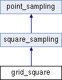

Point sampling of the unit square according to a regular cartesian grid with n points on its side.
More...
#include <grid_square.h>
Inheritance diagram for grid_square:

Public Member Functions | |
| grid_square () | |
| Default constructor. | |
| grid_square (unsigned int n) | |
| Initialization constructor. More... | |
| virtual void | fill () override |
| Generate the n x n grid of points. | |
| void | set_n (unsigned int n) |
Set the number of points n on the side of the square. | |
 Public Member Functions inherited from point_sampling Public Member Functions inherited from point_sampling | |
| bun | to_ray_bundle (const Vec3 &direction) const |
| Convert to a ray bundle with a given direction. More... | |
| void | scale (double factor) |
| Scale the sampling. More... | |
Private Member Functions | |
| virtual std::string | print_type () const override |
| Specialization-dependent string indicating the point sampling type. | |
Private Attributes | |
| unsigned int | n |
| The number of points on the side of the square grid. More... | |
Additional Inherited Members | |
| Public Attributes inherited from point_sampling | |
| std::vector< Vec2 > | points |
| Vector of 2D points storing the sampling. | |
Detailed Description
Point sampling of the unit square according to a regular cartesian grid with n points on its side.
Constructor & Destructor Documentation
◆ grid_square()
| grid_square::grid_square | ( | unsigned int | n | ) |
Initialization constructor.
- Parameters
-
n The number of points on the side of the square grid.
Member Data Documentation
◆ n
|
private |
The number of points on the side of the square grid.
The total number of points in the sampling is then n x n.
The documentation for this class was generated from the following files:
- src/square_sampling/grid_square.h
- src/square_sampling/grid_square.cpp